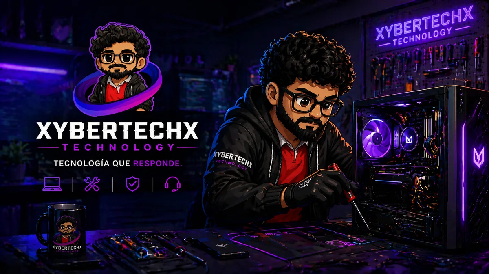

Formateo profesional
Instalación de Windows 10 Pro o Windows 11 Pro, drivers y configuración base.
S/60 Solicitar servicioFormateo, mantenimiento, desbloqueo, Office, antivirus y asesoría tecnológica real.
Solicitar atención
XyberTechX Technology nace para ayudar a personas que necesitan que su PC o laptop funcione bien sin complicarse con términos técnicos. Atendemos mantenimiento, formateo, desbloqueo, instalación de software, protección y asesoría de compra.
Nuestro enfoque es simple: primero entendemos el problema, luego explicamos la solución y recién después ejecutamos el servicio.
Te explicamos qué tiene tu equipo y qué conviene hacer antes de tocarlo.
Priorizamos estabilidad, respaldo, rendimiento y una entrega bien revisada.
También orientamos en accesorios, componentes y productos según presupuesto.
Instalación de Windows 10 Pro o Windows 11 Pro, drivers y configuración base.
S/60 Solicitar servicioRecuperamos el acceso según el tipo de bloqueo y evaluamos la mejor solución.
S/80 Solicitar servicioLimpieza general, revisión básica, optimización y diagnóstico del equipo.
S/60 Solicitar servicioLimpieza técnica + cambio de pasta térmica DeepCool para mejor temperatura.
S/80 Solicitar servicioLimpieza técnica + pasta térmica Arctic MX-4 para equipos exigentes.
S/100 Solicitar servicioInstalación de Office 365 con licencia incluida y listo para trabajar.
S/140 Solicitar servicioAntivirus Kaspersky con licencia para 2 computadoras.
S/60 Solicitar servicioOffice 365 + antivirus Kaspersky para 2 computadoras. Combo ideal para productividad y seguridad.
S/150 Solicitar servicioTe ayudamos a elegir componentes, laptops, accesorios o una PC completa según tu presupuesto y necesidad.
Te orientamos sin compromiso según tu presupuesto y necesidad.
Sin compromisoVamos contigo a Wilson para cotizar una PC según tu presupuesto y evitar que te cambien piezas.
S/150Nos escribes por WhatsApp y nos explicas qué falla: lentitud, bloqueo, temperatura, programas o rendimiento.
Te indicamos qué servicio conviene realmente. No vendemos por vender; se recomienda según el estado del equipo.
Aplicamos formateo, mantenimiento, desbloqueo, instalación o protección según corresponda.
Verificamos funcionamiento, rendimiento y estabilidad antes de entregar el equipo.
Depende del caso. Por WhatsApp revisamos el problema y te indicamos la mejor forma de atención.
En formateos o desbloqueos siempre evaluamos primero. Si se necesita respaldo, te lo indicamos antes.
Sí. Podemos orientarte para comprar una laptop, PC, cable, accesorio o componente adecuado.
Escríbenos ahora y te orientamos con el servicio correcto.
Hablar con XyberTechX